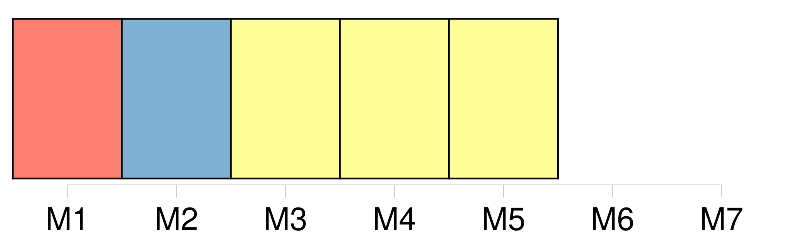

Longueur nb maillons : 5 mentions |
 |
Lorsque la zone de la convention empiète sur une zone réglementée par [une autre organisation de gestion des pêcheries] , la Commission coopère avec [cette organisation] afin de garantir la réalisation de l'objectif de la présente convention.
À cette fin, au moyen de consultations ou d'autres arrangements, la Commission s'attache à convenir avec [l'autre organisation] des mesures pertinentes à prendre, permettant par exemple d'assurer l'harmonisation et la compatibilité des mesures de conservation et de gestion adoptées par la Commission et [l'autre organisation] , ou de décider que la Commission ou [l'autre organisation] , selon le cas, évite de prendre dans cette zone des mesures relatives aux espèces réglementées par l'autre partie. |
|
Il est possible de télécharger la ressource sur la page Ortolang |
Si vous avez des questions ou vous voyez des erreurs, merci d'envoyer un mail à silvia.federzoni89@gmail.com |